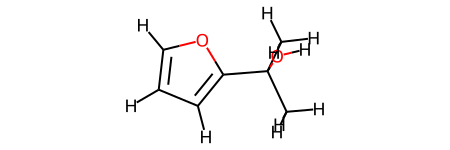
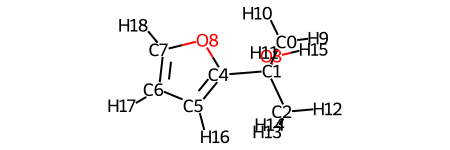
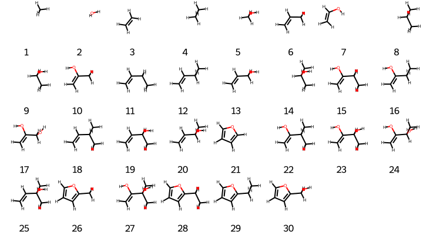

Amons generation and visualization
In this section, the basic usage of the code is illustrated for an exmplified QM9 molecule.
Topics:
covalent amons generation
for one query
for multiple queries
visualization of amons
from rdkit import Chem
from aqml import io2
import aqml.cheminfo.rdkit.rdkit as crr
import aqml.cheminfo.draw.core as cdc
fs = io2.cmdout('ls ../../tests/cov/*sdf'); fs
Convert SDF file to RDKit molecule
m = crr.sdf2oem(fs[-1])
By simply typing m, one sees its 2d structure
m

For more robust visualization, use an enhanced module cheminfo.draw.core
vr = cdc.draw_rdkit()
vr.viewm(fs[-1], woH=False) # set woH to True if one wants not to show H atoms

One could see more usages by typing help(vr)
Covalent amons generation for a single query molecule
Note that the python codes below is only for the purpose of diagnosis. It’s recommended to use AQML_ROOT/bin/genamon for routine generation of amons.
import aqml.cheminfo.algo.amon as caa
# `wg`: write geometry of amons to files? True/False
fs1 = [fs[-1] ]
obj = caa.ParentMols(fs1, k=7, verbose=0, wg=False, i3d=True)
print('number of molecular graphs: ', len(obj.cans))
print('number of conformers: ', len(obj.ms))
number of molecular graphs: 25
number of conformers: 30
Above, k=7 stands for the maximal number of heavy atoms allowed for an amon is 7, verbose=0 indicates zero cov regarding details about amons generation. wg=False means that no 3D geometry is gonna be written to some file. i3d=True suggests that 3D geometry of query molecule are taken into account.
As one can see, more conformers (totalling 30 were generated). This is due to the fact that there might be more than 1 conformer for a given molecular graph (in particular for those molecules containing flexible/rotatable bonds).
smiles = obj.cans
smiles
['C',
'O',
'C=C',
'CC',
'CO',
'C=CC',
'C=CO',
'CCC',
'CCO',
'C=C(C)O',
'C=CCC',
'C=CCO',
'CC(C)O',
'C=C(O)CC',
'C=C(O)CO',
'C=CC(C)C',
'C=CC(C)O',
'c1ccoc1',
'C=C(O)C(C)C',
'C=C(O)C(C)O',
'C=CC(C)(C)O',
'Cc1ccco1',
'C=C(O)C(C)(C)O',
'CCc1ccco1',
'OCc1ccco1']
Note that if i3d was set to False (set iwa=False meanwhile, i.e., do not write SMILES to a file; if one uses default option of iwa, which is True, then one needs so specify the filename through label=<string>), then the same set of smiles would be generated, but with no conformers.
obj_c0 = caa.ParentMols(fs1, k=7, verbose=0, wg=False, i3d=False, iwa=False)
print('number of molecular graphs: ', len(obj_c0.cans))
print('number of conformers: ', len(obj_c0.ms))
number of molecular graphs: 31
number of conformers: 0
Covalent amons generation for multiple query molecules
Note that the python codes below is only for the purpose of diagnosis. It’s recommended to use AQML_ROOT/bin/genamon for routine generation of amons.
Procedure for this is basically the same as for the case of single query, with one minor exception that a new map file is generated meanwhile. See below for details.
Here, we generate amons of all 3 test molecules.
# `wg`: write geometry of amons to files? True/False
obj3 = caa.ParentMols(fs, verbose=0, wg=False)
print('number of molecular graphs: ', len(obj3.cans))
print('number of conformers: ', len(obj3.ms))
number of molecular graphs: 42
number of conformers: 66
Now to get an idea of which sets of amons belong to which query, we have to have a look at the attribute maps:
obj3.maps
array([[ 0, 2, 4, 9, 7, 38, 13, 36, 57, 14, 29, 53, 39, 15, 37, 61,
58, 50, 16, 30, 54, -1, -1, -1, -1, -1, -1, -1, -1, -1],
[ 0, 2, 3, 4, 9, 7, 40, 18, 42, 63, 23, 31, 55, 41, 15, 19,
43, 62, 64, 51, 24, 17, 32, 56, -1, -1, -1, -1, -1, -1],
[ 0, 1, 5, 6, 2, 8, 44, 7, 12, 49, 22, 28, 65, 11, 34, 46,
20, 26, 59, 10, 25, 48, 52, 35, 47, 33, 45, 21, 27, 60]])
The shape of maps is (3, 30), where 3 corresponds to the number of queries, while 30 indicates the maximal number of amons to which a query could be decomposed. In this very case, molecular 3 (03.sdf) turns out to be such a query that is made up of the most diverse atomic environments. For query with less than 30 amons, relevant entries with no amon correspondence are padded by -1. Note that all non-negative entries correspond to the conformer index (when i3d=True) and begin with 0, i.e., the first conformer in obj3.ms.
Visualization
To visualize the pseudo-3D geometries of these amon conformers, use vr.viewms
Here are some essential parameters of this function:
nmr: number of molecules per row to be displayed
wlgd_text: description text for each conformer, could be one of ‘id’, ‘smiles’
molSize: the size of the image for each molecule
```python
vr.viewms(obj.ms, wlgd_text='id', nmr=8, molSize=(90,100))
